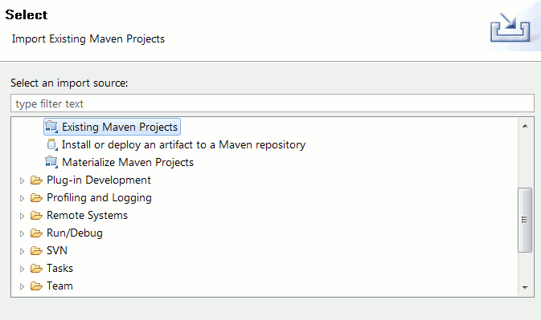
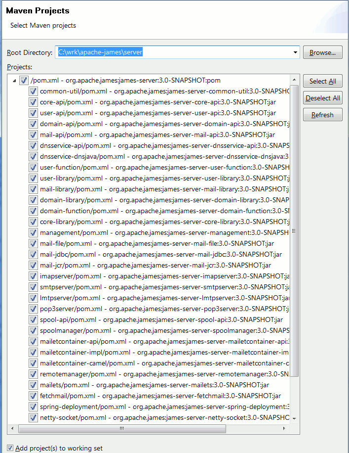
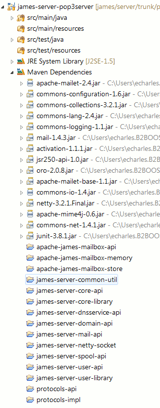
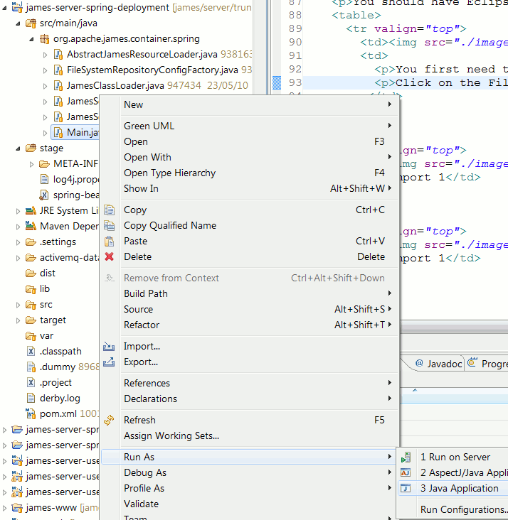
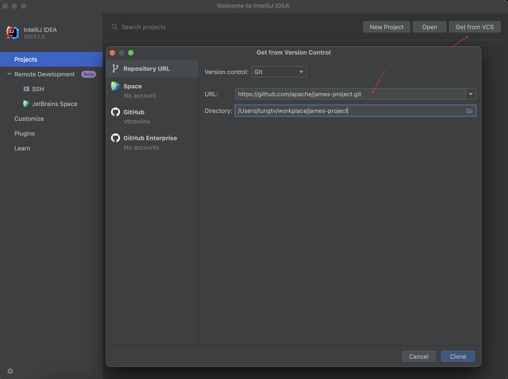
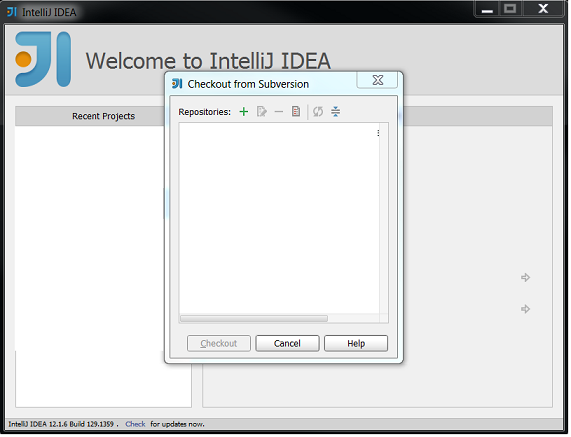
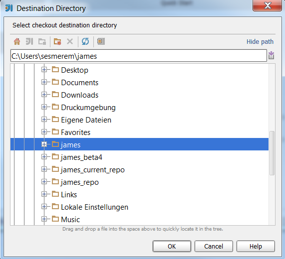

This step is not necessary to use the standard out of the box version of James. A pre-built binary version of James is available from the James download directory.
But if you wish to customize the James source code, it will be necessary for you to build the distribution yourself.
You can read on this page how to build from the command line and from eclipse IDE.
There are two ways to get the James source code.
We consider in this document that you have checked-out James source code in JAMES_SRC_HOME directory.
Consult the architecture page if you want to learn more on the internal source structure.
To run the build you need two third-party tools.
Set (on windows) or export (on Unix) MAVEN_OPTS to tune the memory needed by maven with "MAVEN_OPTS=-Xmx1024m -XX:MaxPermSize=128m"
In the JAMES_SRC_HOME top level directory (where the parent pom.xml resides), invoke maven with 'mvn' with any of the following command line arguments:
For example, invoke mvn package to get a zip/tar of James distribution.
All built products are output in the server/container/spring/target subdirectory of the James source directory. This directory will be deleted if you run build with the clean argument.
Warning! Any changes you've made in the 'dist' directory will be lost after a recompilation. If you are running James for this directory we recommend you backup to avoid losing work.
You can also invoke the command line from a shell. Go to the server project cli folder and type mvn exec:java -Dexec.args="-h localhost -p 9999 help"
Upon the following documentation, an interessting resource can be found here
You should have Eclipse IDE with m2eclipse plugin installed.
You now need to import the maven projects in the Eclipse workspace.
Therefore, click on the File menu and select Import. Choose Existing Maven Project and click on Next button.
Select the JAMES_SRC_HOME directory where you have checked out the source code.
Eclipse should present you with the list of James server modules.
Select the modules you want to import (by default, all) and click on Finish to execute the import.
Check that 'Workspace resolution' is enable in m2eclipse plugin.
Your changes in code will be directly taken into account.
Now you have James projects in Eclipse workspace.
You still have to prepare the following to be able to run from Eclipse:
That's it. Run or Debug James in Eclipse (right-click on the Main class) and Have Fun!.
If you change a JPA Entity class, your will need to run 'mvn package' or add the following option to the VM argument of your run configuration '-javaagent:my_home_folder/.m2/repository/org/apache/openjpa/openjpa/2.2.1/openjpa-2.2.1.jar'
This was done using NetBeans 7, which comes bundled with Maven 3, needed to build James 3. Older versions of NetBeans should be able to build James fine, provided that you configure them to use an instance of Maven 3, if they do not have it. I used james 3.0-beta1 release and it builds in 7:40 min on my notebook running Debian Squeeze.
Building James with NetBeans is very easy as it comes with Subversion and Maven support already build in. Maven is bundled with the IDE, but Subversion is not, so you will have to install Subversion yourself and NetBeans will be able to use it. You can get more details on how to install and where to get Subversion from the NetBeans Help menu by clicking on Help Contents and from there go to the IDE Basics->Version Control and File Hierarchy->Subversion topic.
For Linux users, Subversion is probably packaged by your distribution so use your distribution tools to install it (aptitude, yum, etc.)
Once you have Subversion, go to Team->Subversion->Checkout menu entry.
You will see an dialog window used to enter the information about the Subversion repository you are going to use. It looks like this:
In the Repository URL field enter the location for James repository and click Next.
You can use the following URL to get the master or development version:
http://git-wip-us.apache.org/repos/asf/james-project.git.
After this you will be presented with another dialog window where you can configure which folders to check out and where to save them on your machine.
If you supplied the above URL you can click Finish to get master version and start hacking.
You can choose another folder by clicking Browse. A new dialog window will open and from there you can browse
the whole subversion repository. I wanted to build James 3.0beta so I choosed james-serve-3.0-beta1 under james/server/tags/ folder.
After you click Finish NetBeans will checkout the sources. It will detect the Maven project and ask you if you wish to open the project.
If you open the project you will see in the Projects Window (CTRL+1 if not visible) something similar to the next image:
Building the project does not require too much work. Just go to Run->Build Project menu option.
Make sure that James is the main project (if you have other projects open) or NetBeans will build that project instead of James.
Once the build is finished you will find the binary distribution in container-spring/target directory.
This section has been created using IntelliJ IDEA 12 and Maven 3. And downloading the master version of the server from http://git-wip-us.apache.org/repos/asf/james-project.git/.
To download the source code, you can use the Subversion support that comes with IntelliJ IDEA following the next steps:
First, in the Welcome page, click on Check out from Version Control and select Subversion.
In the pop-up window, press the + button to add the James code repository in the next pop-up.
Then, choose the location for the project.
When this process is done, the project should look like this.